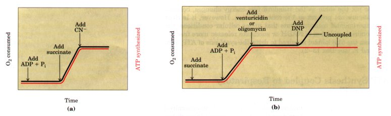
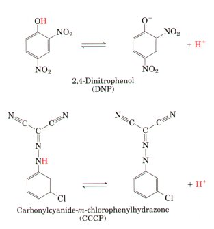
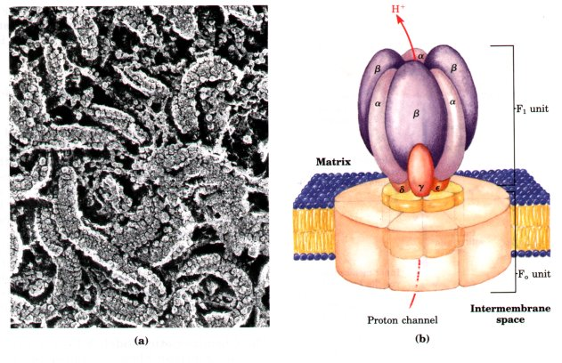
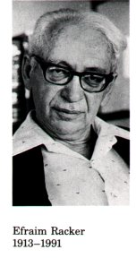
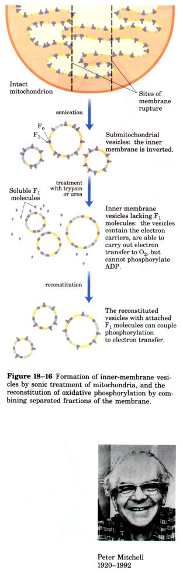
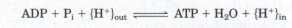
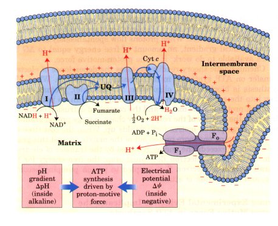
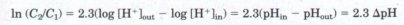
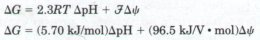
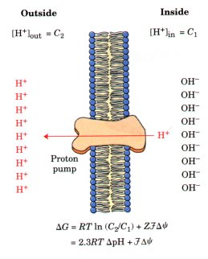

We now turn to the most fundamental question about mitochondrial oxidative phosphorylation: how does the flow of electrons through the respiratory chain channel energy into the synthesis of ATP? We have seen that electron transfer through the respiratory chain releases more than enough free energy to form ATP. Mitochondrial oxidative phosphorylation therefore poses no thermodynamic problem. However, one cannot deduce from thermodynamic considerations the chemical mechanism by which energy released in one exergonic reaction (the oxidation of NADH by O2) is channeled into a second, endergonic, reaction (the condensation of ADP and Pi). To describe the process of oxidative phosphorylation completely, we need to identify the physical and chemical changes that result from electron flow and cause ADP phosphorylation - the mechanism that couples oxidation with phosphorylation.
We begin our discussion by considering the stoichiometry of oxidation and phosphorylation in isolated mitochondria and the evidence for obligatory coupling of the two processes. The chemiosmotic interpretation of oxidative phosphorylation is then presented, with the major lines of evidence that support it. The enzyme ATP synthase, which is directly responsible for ATP synthesis, is the equivalent of an F-type ATP-dependent proton pump working in reverse; the flow of protons down their electrochemical gradient through this "pump" drives the condensation of Pi and ADP. We describe also the membrane transport systems that move substrates, products, and reducing equivalents between the cytosol and the mitochondrial matrix. Having looked in detail at the coupling of ATP synthesis to electron flow, we will see that in the mitochondria of some tissues the two processes are deliberately "uncoupled" to produce heat.
We conclude with a summary of the overall regulation of ATPproducing processes in the cell, and a look at two further interesting aspects of mitochondria: the mitochondrial genome (and the effects of mutations therein) and the likely evolutionary origins of these organelles.
When isolated mitochondria are suspended in a buffer containing ADP, Pi, and an oxidizable substrate such as succinate, three easily measured processes occur: (1) the substrate is oxidized (succinate yields fumarate), (2) O2 is consumed (respiration occurs), and (3) ATP is synthesized. Careful experimental measurements of the stoichiometry of electron transfer to O2 and the associated synthesis of ATP show that with NADH as electron donor, mitochondria synthesize nearly 3.0 ATP per pair of electrons passed to O2, and with succinate nearly 2.0 ATP per electron pair. Oxygen consumption and ATP synthesis are dependent upon substrate oxidation, as can be seen in the experiments diagrammed in Figure 18-13.

Figure 18-13 Electron transfer to O2 is tightly coupled to ATP synthesis in mitochondria, as is demonstrated in these experiments. Mitochondria are suspended in a buffered medium, and an O2 electrode is used to monitor O2 consumption. At intervals, samples are removed and assayed for the presence of ATP. (a) The addition of ADP and Pi alone results in little or no increase in either respiration (O2 consumption; black) or ATP synthesis (red). When succinate is added, respiration begins immediately and ATP is synthesized. The addition of cyanide (CN- ), which blocks electron transfer between cytochrome oxidase and O2, inhibits both respiration and ATP synthesis. (b) Mitochondria provided with succinate respire and synthesize ATP only when ADP and Pi are added. Subsequent addition of venturicidin or oligomycin, inhibitors of ATP synthase, blocks both ATP synthesis and respiration. Dinitrophenol (DNP) allows respiration to continue without ATP synthesis; DNP acts as an uncoupler.
Because the energy of substrate oxidation drives ATP synthesis in mitochondria, it is not surprising that inhibitors of the passage of electrons to O2 (e.g., cyanide ion, carbon monoxide, and antimycin A) block ATP synthesis (Fig. 18-13a). It is perhaps not so obvious that the converse is true: inhibition of ATP synthesis blocks electron transfer in intact mitochondria. This obligatory coupling can be demonstrated in isolated mitochondria by providing O2 and oxidizable substrates, but not ADP (Fig. 18-13b). Under these conditions, no ATP synthesis can occur, and electron transfer to O2 is also strikingly reduced. Coupling of oxidation and phosphorylation can also be demonstrated using oligomycin or venturicidin, toxic antibiotics that bind to the ATP synthase in mitochondria. These compounds are potent inhibitors of both ATP synthesis and the transfer of electrons through the chain of carriers to O2 (Fig. 18-13b). Because oligomycin is known not to interact directly with the electron carriers but only with ATP synthase, it follows that electron transfer and ATP synthesis are obligatorily coupled; neither reaction occurs without the other.
| There are, however, certain conditions and reagents that uncouple oxidation from phosphorylation. When intact mitochondria are disrupted by treatment with detergent or physical shear, the resulting memfbrane fragments are still capable of catalyzing electron transfer from succinate or NADH to O2, but no ATP synthesis is coupled to this respiration. Certain chemical compounds also cause uncoupling (Fig. 18-13b), without disrupting mitochondrial structure. The chemical uncouplers (Table 18-4) include 2,4-dinitrophenol (DNP) and a group of compounds related to carbonylcyanide phenylhydrazone (Fig. 18-14). All of these uncouplers are weak acids with hydrophobic properties. Ionophores (p. 560) also uncouple oxidative phosphorylation. These agents bind to inorganic ions and surround them with hydrophobic moieties; the ionophore-metal ion complexes pass easily through membranes. We shall see later how the chemiosmotic theory accounts for the action of uncouplers. |  Figure 18-14 Two chemical uncouplers of oxidative protons across the inner mitochondrial membrane, phosphorylation. Both have a dissociable proton dissipating the proton gradient. Both also uncouple and are very hydrophobic. They act by carrying photophosphorylation (p. 585). |
ATP synthase, the ATP-synthesizing enzyme complex of the inner mitochondrial membrane, has two major components (or factors), Fl and Fo (Fig. 18-15). The subscript letter 0 in F0 denotes that it is the portion of the ATP synthase that confers sensitivity to oligomycin, a potent inhibitor of this enzyme complex and thus of oxidative phosphorylation (Table 18-4).

Figure 18-15 The ATP synthase complex from mitochondria. (a) Electron micrographs showing the knoblike protrusions from the mitochondrial inner membrane. (b) Schematic diagram showing the likely organization of the subunits to form the proton-conducting F0 portion, and the ATP-synthesizing F1 unit. The F1 complex consists of three α, three β, and one each of γ, δ, and ε subunits, as discussed later in the chapter (p. 562).
F1 was first extracted from the mitochondrial inner membrane and purified by Efraim Racker and his colleagues in the early 1960s. Isolated F1 cannot synthesize ATP from ADP and Pi; because it can catalyze the reverse reaction-hydrolysis of ATP-the enzyme was originally called F1ATPase. When F1 is carefully extracted from inside-out vesicles prepared from the inner mitochondrial membrane (Fig. 18-16, p. 558), the vesicles still contain intact respiratory chains and can catalyze electron transfer, but cannot make ATP. When a preparation of isolated F1 is added back to such depleted vesicles, their capacity to couple electron transfer and ATP synthesis is restored. Membrane reconstitution experiments of this kind, pioneered by Racker, opened new doors to research on membrane structure and function.
| F1, which in all aerobic organisms consists of six subunits, contains several binding sites for ATP and ADP, including the catalytic site for ATP synthesis. It is a peripheral membrane protein complex, held to the membrane by its interaction with Fo, an integral membrane protein complex of four different polypeptides that forms a transmembrane channel through which protons can cross the membrane. Highresolution electron micrographs of the isolated FoFI complex show the knoblike F1 head, a stalk, and a base piece (Fo), which normally extends across the inner membrane (Fig. 18-15b). |  |
The complete F0F1 complex, like isolated F1, can hydrolyze ATP to ADP and Pi, but its biological function is to catalyze the condensation of ADP and Pi to form ATP. The F0F1 complex is therefore more appropriately called ATP synthase.
The structure and catalytic activity of ATP synthase from mitochondria show that it belongs to a larger class of enzymes that we have already encountered: the F-type ATPases (see Table 10-5). These protein complexes share the FoFI structure, and there is sequence homology between the subunits of the F-type ATPases and those of mitochondrial ATP synthase. F-type ATPases are ATP-dependent proton pumps; they use the energy released by ATP hydrolysis to move protons across membranes against a concentration gradient, thereby creating a difference of pH and electrical charge (an electrochemical potential) across the membrane. The F-type ATPases must have evolved very early; they are found in the membranes of eubacteria and archaebacteria and in the mitochondria of all aerobic eukaryotes. Chloroplasts also contain an ATP synthase that is an F-type ATPase, which acts in light-driven ATP synthesis, as we shall see shortly.
The Chemiosmotic Model: A Proton Gradient couples Electron Flow and PhosphorylationHow does the oxidation of substrates via electron transfer through the respiratory chain cooperate with the ATP synthase to bring about phosphorylation of ADP to ATP? Early investigators of mitochondrial oxidative phosphorylation had before them a well-documented example of an oxidation coupled with a phosphorylation and involving a high-energy chemical intermediate: the glyceraldehyde-3-phosphate dehydrogenase reaction. In this glycolytic step, glyceraldehyde-3-phosphate is oxidized and simultaneously converted to 1,3-bisphosphoglycerate, a compound with a high-energy group at the site of the oxidation (see Fig. 14-5). ATP is formed when 1,3-bisphosphoglycerate transfers its activated Pi to ADP. The formal similarity between this oxidative phosphorylation and that which takes place in mitochondria led naturally to the chemical coupling hypothesis, according to which some high-energy chemical intermediate is the direct product of electron transfer through one of three coupling sites along the chain of mitochondrial electron carriers. The energy in this putative chemical intermediate would then be used to drive the synthesis of ATP. An enormous amount of effort was expended in the search for such a chemical intermediate; none was found. In the early 1960s Peter Mitchell suggested a new paradigm that has become central to current thinking and research on biological energy transductions. Mitchell's chemiosmotic hypothesis accounted for the experimental observations and made certain novel and experimentally testable predictions. Having survived more than two decades of vigorous testing and refinement, the hypothesis has become a generally accepted theory that is applied not only to mitochondrial oxidative phosphorylation, but to a wide array of other energy transductions, including light-driven ATP formation in photosynthetic organisms. |
 |
As postulated in the chemiosmotic theory (Fig. 18-17), the transfer of electrons along the respiratory chain is accompanied by outward pumping of protons across the inner mitochondrial membrane, which results in a transmembrane difference in proton concentration (a proton gradient) and thus in pH; the matrix becomes alkaline relative to the cytosolic side of the membrane. The electrochemical energy inherent in this difference in proton concentration and separation of charge, the proton-motive force, represents a conservation of part of the energy of oxidation. The proton-motive force is subsequently used to drive the synthesis of ATP catalyzed by Fl as protons flow passively back into the matrix through proton pores formed by F0. To emphasize this crucial role of the proton-motive force, the equation for ATP synthesis is sometimes written

| In the more general case, the electrochemical energy of a transmembrane gradient of any charged species is seen to be interconvertible with the energy of chemical bonds. The energy stored in such a gradient has two components, as implied in the word "electrochemical." One is the chemical potential energy due to the difference in concentration of a chemical species in the two regions separated by the membrane; the other is the electrical potential energy that results from the separation of charge when an ion moves across the membrane without its counterion (Fig. 18-17). |  Figure 18-17 In this simple version of the chemiosmotic theory applied to mitochondria, electrons from NADH and other oxidizable substrates pass through a chain of carriers (cytochromes, etc.) arranged asymmetrically in the membrane. Electron flow is accompanied by proton transfer across the mitochondrial membrane, producing both a chemical (ΔpH) and an electrical (Δψ) gradient. The inner mitochondrial membrane is impermeable to protons; protons can reenter the matrix only through proton-specific channels (F0). The proton-motive force that drives protons back into the matrix provides the energy for ATP synthesis, catalyzed by the F1 complex associated with F0. |
| We showed in Chapter 10 that the
free-energy change for the creation of an electrochemical
gradient by an ion pump (Fig. 18-18) is
where C2/Cl is the concentration ratio for the ion that moves, Z is the absolute value of its electrical charge (1 for a proton), and Δψ is the transmembrane difference in electrical potential, measured in volts. For the case of protons at 25 'C  and Equation 18-2 reduces to  |
 Figure 18-18 The inner mitochondrial membrane separates two compartments of different pH, producing differences in both chemical concentration (ΔpH) and charge distribution, creating an electrical potential difference (Δψ). The net effect of these differences is the proton-motive force (ΔG), which can be calculated as shown. This is explained more fully in the text. |
For the pumping of ions against an electrochemical gradient, both terms on the right-hand side of this equation have positive values, and ΔG is therefore positive. When protons flow spontaneously down their electrochemical gradient, an amount of free energy equal to ΔG becomes available to do work; it is the proton-motive force.
Chemiosmotic theory readily explains the dependence of electron transfer on ATP synthesis in mitochondria (Fig. 18-17). When ATP synthesis is blocked (with oligomycin, for example), protons cannot flow into the matrix through the F0F1 complex. With no path for the return of protons to the matrix and the continued extrusion of protons driven by the activity of the respiratory chain, a large proton gradient, hence a large proton-motive force, builds up. When the cost (free energy) of pumping one more proton out of the matrix against this gradient equals or exceeds the energy released by the transfer of electrons from NADH to O2, electron flow must stop; the free energy for the overall process of electron flow coupled to proton pumping becomes zero, and equilibrium is attained.